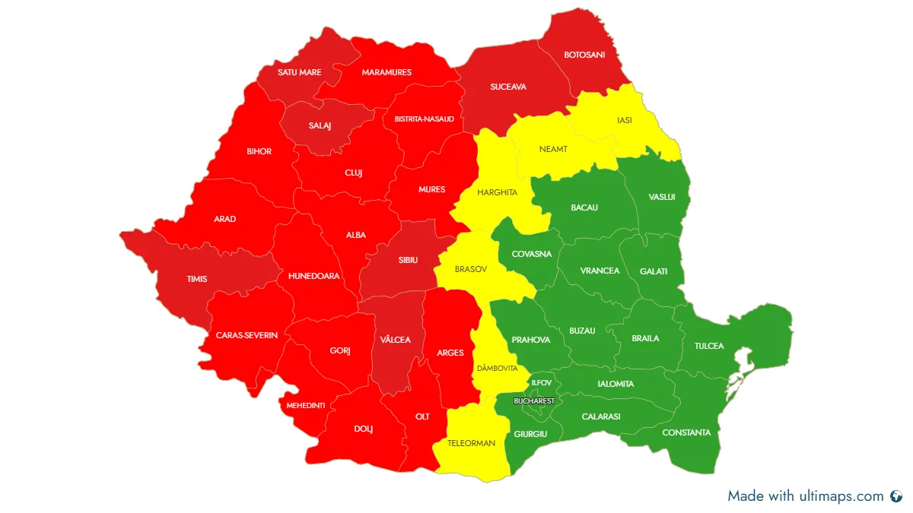

- Acasă
- Zone deservite
Ignifugare în Brăila, Galați, Constanța, București și Sud-Estul României
SC Ignifug SRL execută lucrări de ignifugare în județele din Sud, Sud-Est și Estul României, plecând din Brăila.
Hartă a zonelor deservite
Județele marcate cu verde pe hartă sunt zonele în care lucrăm cel mai des. Pentru proiecte în alte județe ne puteți suna și analizăm cererea.
Cunoscând zona, putem planifica rapid intervenția, putem face o ofertă corectă și ne asigurăm că lucrarea respectă cerințele tehnice și pe cele ale ISU.

Unde executăm lucrări de ignifugare
Ignifugare Brăila
Sediul firmei este în municipiul Brăila, pe Str. Frumoasa nr. 77. Lucrăm în Brăila, Ianca, Însurăței, Făurei și în comunele din județ.
Ignifugare Galați
Ignifugare în Galați, Tecuci, Târgu Bujor, Berești și localitățile din județ, la mică distanță de sediul din Brăila.
Ignifugare Buzău
Lucrări de ignifugare în Buzău, Râmnicu Sărat, Nehoiu, Pogoanele și în zona montană a județului, unde șarpantele din lemn sunt frecvente.
Ignifugare Tulcea
Ignifugare pentru case, pensiuni și construcții turistice în Tulcea, Măcin, Isaccea, Babadag și zona Deltei Dunării.
Ignifugare Constanța
Ignifugare în Constanța, Mangalia, Medgidia, Năvodari și pe litoral, pentru hoteluri, restaurante, terase și hale.
Ignifugare Vrancea
Lucrări în Focșani, Adjud, Mărășești, Odobești și în localitățile din județul Vrancea.
Ignifugare București
Ignifugare în toate sectoarele Bucureștiului, pentru construcții rezidențiale, comerciale și industriale.
Ignifugare Ilfov
Lucrări în Voluntari, Otopeni, Popești-Leordeni, Chiajna, Bragadiru și zonele logistice din jurul Capitalei.
Ignifugare Iași
Ignifugare în Iași, Pașcani, Hârlău, Târgu Frumos și în județul Iași.
Ignifugare Vaslui
Lucrări în Vaslui, Bârlad, Huși, Negrești și în localitățile din județ.
Ignifugare Bacău
Ignifugare în Bacău, Onești, Moinești, Comănești și în localitățile din județul Bacău.
Cereți o ofertă de ignifugare
Spuneți-ne ce trebuie tratat (șarpantă, structură din lemn, hală), suprafața aproximativă și localitatea. Vă răspundem cu pașii următori și o ofertă.
- Telefon0740 899 950
- Emailignifugbraila@yahoo.com
- ContactGheorghiță Petrică
- SediuStr. Frumoasa nr. 77, Brăila